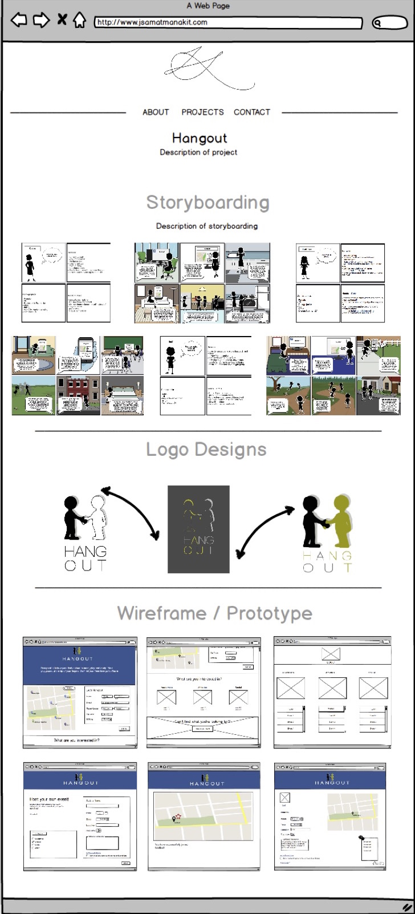
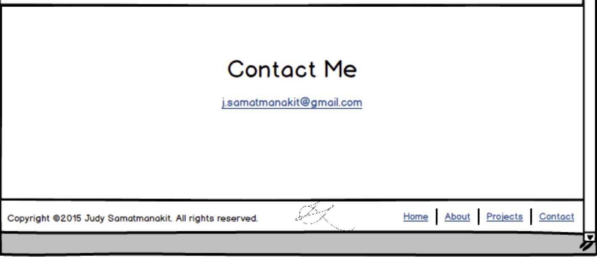

Wireframe
In discussing the actual design of my website, I chose to go with more of a professional feel rather than a personal feel. My main banner image consists of a graphic I created to represent innovation. The graphic shows professionally dressed figures going through a structure that represents the act of innovation. By using this graphic, I am able to create a professional feel to my website along with showcasing one of my graphic work.
Clicking on a project would open up a new page.
 